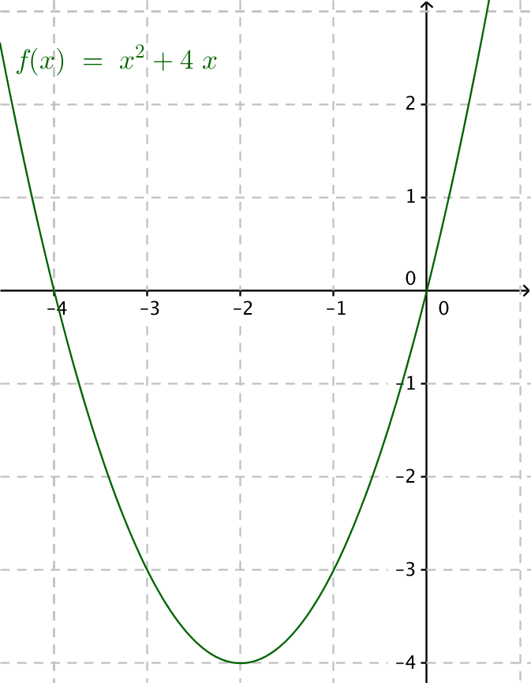
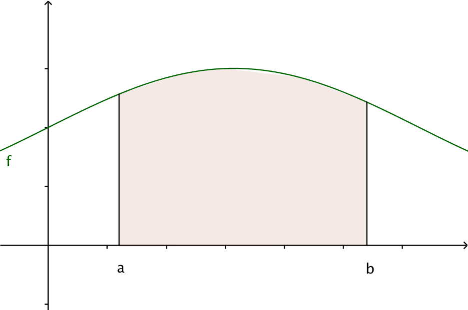
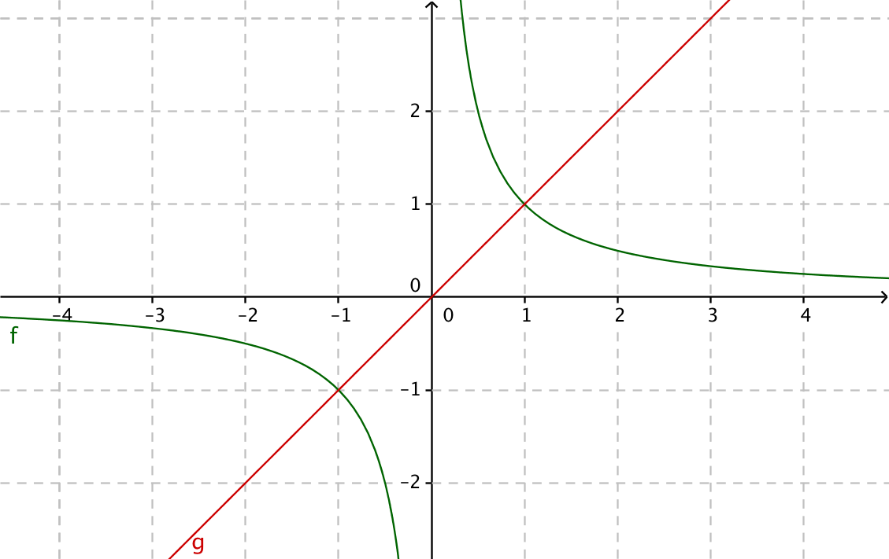

9. Arean mellan koordiataxlar och en funktion
Bestäm storleken av arean som bildas mellan \( f(x)=x^2+4x \) och \( x \)-axeln.
Lösning
Vi har följande situation

\( \begin{array}{rcl} x^2+4x & = & 0 \\ x(x+4) & = & 0 \\ \end{array} \)
som har lösningarna \( x=0 \) och \( x+4=0 \Leftrightarrow x=-4 \).
Arean får vi genom att räkna
\( \begin{array}{rcl} \displaystyle\int_{-4}^0 x^2+4x \mathrm{ d}x & = & \bigg/_{-4}^0 \dfrac{1}{3}x^3+4\dfrac{1}{2}x^2 \\ & = & \bigg/_{-4}^0 \dfrac{1}{3}x^3+2x^2 \\ & = & (\dfrac{1}{3}\cdot 0^3+2\cdot 0^2)-(\dfrac{1}{3}(-4)^3+2(-4)^2) \\ & = & 0-(10\dfrac{2}{3}) \\ & = & -10\dfrac{2}{3} \\ \end{array} \)
Areor som bildas mellan funktioner och koordinataxlar bestämmer vi så att vi får ett positivt värde för arean.
Då \( f(x)\geq 0 \) får vi arean som \( A= \displaystyle\int_a^b f(x) \mathrm{ d}x \).

Då \( f(x)\leq 0 \) får vi arean som \( A= -\displaystyle\int_a^b f(x) \).

Generellt gäller att \( A= \mid\displaystyle\int_a^b f(x) \mathrm{ d}x \mid \).
Exempel 1 Bestäm arean som bildas mellan funktionen \( f(x)=x^3-3x^2-x+3 \) och \( x \)-axeln i intervallet \( [0,3] \).
Lösning
Då vi ritar en skiss märker vi att arean är ovan och nedanför \( x \)-axeln. För att få ett korrekt värde på arean behandlar vi den som två intervall. För att göra det behöver vi nollställena för funktionen, alltså \( x^3-3x^2-x+3 =0 \) då \( x=\pm1 \) eller \( x=3 \).

Vi får \( \displaystyle\int_0^3 x^3-3x^2-x+3 \mathrm{ d} x= \displaystyle\ _0^1 x^3-3x^2-x+3 \mathrm{ d} x -\displaystyle\int_1^3 x^3-3x^2-x+3 \mathrm{ d} x \).
Arean är:
\( \begin{array}{l} \displaystyle\int_0^1 x^3-3x^2-x+3 \mathrm{ d} x -\displaystyle\int_1^3 x^3-3x^2-x+3 \mathrm{ d} x = \\ = \bigg /_0^1 \dfrac{1}{4}x^4-x^3-\dfrac{1}{2}x+3x - \bigg/_1^3 \dfrac{1}{4}x^4-x^3-\dfrac{1}{2}x+3x \\ = [(\dfrac{1}{4}\cdot 1^4-1^3-\dfrac{1}{2}\cdot 1+3\cdot 1)-(\dfrac{1}{4}\cdot 0^4-0^3-\dfrac{1}{2}\cdot 0+3\cdot 0)]\\ -[(\dfrac{1}{4}\cdot 3^4-3^3-\dfrac{1}{2}\cdot 3+3\cdot 3)-(\dfrac{1}{4}\cdot 1^4-1^3-\dfrac{1}{2}\cdot 1+3\cdot 1)] \\ = 2\dfrac{1}{4}-(-1\dfrac{1}{2})\\ = 2\dfrac{1}{4}+1\dfrac{1}{2} =3\dfrac{3}{4}\\ \end{array} \)
Exempel 2 Bestäm arean som bildas i intervallet \( [0,2] \) för funktionerna \( f(x)=\dfrac{1}{x} \) och \( g(x)=x \).
Lösning
Vi har följande situation

Skärningspunkterna för linjerna
\( \begin{array}{rcl} \dfrac{1}{x} & = & x \\ x^2 & = & 1 \\ x & = & \pm 1\\ \end{array} \)
Arean får vi som
\( \begin{array}{rcl} A & = & \displaystyle\int_0^1 x \mathrm{ d}x + \displaystyle\int_1^2 \dfrac{1}{x} \mathrm{ d }x \\ & = & \bigg/_0^1 \dfrac{1}{2}x^2 +\bigg/_1^2 \ln x \\ & = & \dfrac{1}{2}\cdot 1^2 -\dfrac{1}{2}\cdot 0^2 +\ln 2-\ln 1 \\ & = & \dfrac{1}{2}-0+\ln 2 -0 \\ & = & \ln 2 +\dfrac{1}{2}\\ \end{array} \)
Exempel 3 Bestäm arean som bildas mellan \( y \)-axeln och \( x=y^2+2y-3 \).
Lösning
Situationen är följande:

Skärningspunkterna för \( y \)-axeln och funktionen
\( \begin{array}{rcl} y^2+2y-3=0 \\ y & = & \dfrac{-2\pm \sqrt{2^2-4\cdot 1(-3)}}{2\cdot 1} \\ y & = & \dfrac{-2\pm 4}{2}\\ \end{array} \)
Skärningspunkterna är \( y=1 \) och \( y=-3 \).
Arean blir
\( \begin{array}{rcl} A & = & \displaystyle\int_{-3}^1 y^2+2y-3 \mathrm{ d}y \\ & = & \bigg/_{-3}^1 \dfrac{1}{3}y^3 +y^2-3y \\ & = & [\dfrac{1}{3}\cdot 1^3 +1^2-3\cdot 1]-[\dfrac{1}{3}(-3)^3 +(-3)^2-3(-3)]\\\\ & = & -1\dfrac{2}{3} -9 \\ & = & -10\dfrac{2}{3}\\ \end{array} \)
Arean är \( 10\dfrac{2}{3} \) a.e.
Uppgifter
- Bestäm storleken av arean som bildas mellan \( f(x) = x+2 \) och \( x \)-axeln i intervallet \( [-1, 5] \).
Vi får \( A = \displaystyle\int_{-1}^{5} x+2 \mathrm{ d}x = \bigg/_{-1}^5 \dfrac{1}{2}x^2+2x = 24 \) a.e.
- Bestäm storleken av arean som bildas mellan \( f(x)= -x^2+2x+3 \) och \( x\)-axeln i intervallet \( [0,3] \).
Vi får \( A = \displaystyle\int_0^3 -x^2+2x+3 \mathrm{ d}x= = \bigg/_0^3 -\dfrac{1}{3}x^3+x^2+3x = 9 \) a.e.
- Bestäm storleken av arean som bildas mellan \( f(x)=-4x+3 \) och x-axeln i intervallet [1,2].
Eftersom arean är under x-axeln har vi \( A= -\displaystyle\int_1^2 -4x+3 \mathrm{ d}x = -\bigg/_1^2 -2x^2+3x = 3 \) a.e.
- Bestäm arean för det område som bildas mellan funktionen \( f(x)=2x^3-x-1 \) och x-axeln i intervallet \( [-1,1] \).
Arean är under \( x \)-axeln. Arean blir \( A=-\displaystyle\int_{-1}^1 2x^3-x-1 \mathrm{ d}x =- \bigg/_{-1}^1 \dfrac{1}{2}x^4-\dfrac{1}{2}x^2-x = 2 \) a.e.
- Från området som bildas mellan funktionen \( y = -x^2 + 8x \) och \( x \)-axlen tar vi bort arean som bildas av cirklarna \( (x-3)^2 +(y-10)^2 = \dfrac{1}{4} \) och \( (x-5)^2 +(y-10)^2 = \dfrac{1}{4} \).
Rita en bild av situationen, på GeoGebra eller TI-CAS, och bestäm storleken av det område som blir kvar.
Situationen är följande

Skärningspunkterna för funktionen och \( x \)-axeln är \( -x^2 +8x = 0 \), \( x_1 = 0 \) och \( x_2 = 8 \).
Den totala arean är
\( \begin{array}{rcl} A & = & \displaystyle\int_0^8 -x^2+8x \textrm{ d}x \\ & = & \bigg/_0^8 -\dfrac{1}{3}x^3 +4x^2 \\ & = & -\dfrac{1}{3}\cdot 8^3 +4\cdot8^2 - (-\dfrac{1}{3}\cdot 0^3 +4\cdot 0^2) \\ & = & 85\dfrac{1}{3} \\ \end{array} \)
Cirklarna är 2 st, bägge är innanför figuren. De har radien \( \dfrac{1}{2} \). Deras totala area är \( 2 \cdot \pi r^2 = 2\pi (\dfrac{1}{2})^2 = \dfrac{\pi}{2} \).
Figurens totala area är \( 85\dfrac{1}{3} - \dfrac{\pi}{2} \).
- Bestäm storleken av arean som bildas mellan \( f(x)=x^2-4x+3 \) och x-axeln.
Nollställena för funktionen är 1 och 3.
Eftersom arean är under \( x \)-axeln får vi arean som \( -\displaystyle\int_1^3 x^2-4x+3\textrm{ d}x = -\bigg/_1^3 \dfrac{1}{3}x^3-2x^2+3x = \dfrac{4}{3} \) a.e.
- Bestäm storleken av arean som bildas mellan \( f(x)=2\sin x \) och x-axeln i intervallet \( [-\pi,\pi] \).
Eftersom arean är både över och under \( x \)-axeln delar vi upp den i två delar.
\( A= -\displaystyle\int_{-\pi}^0 2\sin x \mathrm{ d}x + \displaystyle\int_0^{\pi} 2\sin x \mathrm{ d}x = -\bigg/_{-\pi}^0 -2\cos x +\bigg/_0^{\pi} -2\cos x = 8 \) a.e.
- Bestäm arean för det område som bildas mellan funktionen \( f(x)=\cos \dfrac{x}{2} \) och x-axeln i intervallet \( [0,2\pi] \).
Eftersom arean är både över och under \( x \)-axeln delar vi in den i två delar.
\( A= \displaystyle\int_0^{\pi} \cos\dfrac{x}{2} \mathrm{ d}x -\displaystyle\int_{\pi}^{2\pi} \cos\dfrac{x}{2} \mathrm{ d}x = \bigg/_0^{\pi} 2\sin\dfrac{x}{2} - \bigg/_{\pi}^{2\pi} 2\sin\dfrac{x}{2} = 4 \) a.e.
- Bestäm arean för det område som bildas mellan funktionen \( f(x)=\sin x \cos^2x \) och x-axeln i intervallet \( [-\dfrac{\pi}{2},\dfrac{\pi}{2}] \).
Funktionen har nollställen varje \( \dfrac{\pi}{2} \). Lös ekvationen \( f(x)=0 \) och kontrollera.
Primitiva funktionen blir \( F(x)=-\dfrac{1}{3}\cos^3 x \).
Eftersom arean alltid emellanåt är negativ och positiv (rita upp och verifiera) blir arean \( A=-\displaystyle\int_{-\frac{\pi}{2}}^0 \sin x \cos^2x \mathrm{ d}x + \displaystyle\int_0^{\frac{\pi}{2}} \sin x \cos^2x \mathrm{ d}x = \bigg/_{-\frac{\pi}{2}}^0 -\dfrac{1}{3}\cos^3 x +\bigg/_0^{\frac{\pi}{2}} -\dfrac{1}{3}\cos^3 x = \dfrac{2}{3} \) a.e.
- Bestäm arean som bildas mellan \( f(x)=2x \), \( g(x)=\dfrac{1}{x}+1 \) och \( x \)-axeln i intervallet \( [0,4] \).
Skärningspunkterna för funktionerna är \( x=-\dfrac{1}{2} \) och \( x=1 \).
Arean blir \( A=\displaystyle\int_0^1 2x\mathrm{ d}x + \displaystyle\int_1^4 \dfrac{1}{x}+1 \mathrm{ d}x = \bigg/_0^1 x^2 + \bigg/_1^4 \ln x + x = \ln 4 +4 \) a.e.
- Bestäm storleken av arean som bildas mellan \( f(x)=-x^2+4x \), \( g(x)=-x+4 \) och x-axeln.
\( f(x)=0 \) då \( x=0 \) eller \( x=4 \), \( g(x)=0 \) då \( x=4 \) och \( f(x)=g(x) \) då \( x=1 \) eller \( x=4 \).
Arean blir \( A=\displaystyle\int_0^1 -x^2-4x \mathrm{ d}x +\displaystyle\int_1^4 -x+4 \mathrm{d x}= \bigg/_0^1 -\dfrac{1}{3}x^3+2x^2 +\bigg/_1^4 -\dfrac{1}{2}x^2+4x = 6\dfrac{1}{6} \) a.e.
- Sidan av en takränna har formeln av en parabel. Öppningen är 10,0 cm och djupet är 7,5 cm. Takrännan är 5,0 m lång. Hur många liter vatten rymmer den?
Parabeln som beskriver sidan har formen \( ax^2+c=0 \). Eftersom höjden är 7,5 cm så är \( c=7,5 \). Det ger oss att \( a\cdot 5^2 +7,5 = 0 \) som ger \( a=-\dfrac{3}{10} \).
Funktionen som beskriver sidan är \( f(x)=-\dfrac{3}{10}x^2+7,5 \).
Volymen för ett prisma är bottenarea gånger höjden. Bottenarean är arean av parabeln, \( \displaystyle\int_{-5}^5 f(x)=50 \) cm\( ^2 = 0,5 \) dm2.
Volymen för rännan blir \( 50 \text{dm} \cdot 0,5 \text{dm}^2 = 25 \text{dm}^3 = 25 \) liter.
- Bestäm arean av det område som bildas mellan \( y \)-axeln och \( x=y^2-4y-5 \).
Skärningspunkterna är \( f(y)=0 \Leftrightarrow y=-1 \) och \( y=5 \).
Arean är \( A=-\displaystyle\int_{-1}^5 y^2-4y-5 \mathrm{ d}y = \bigg/_{-1}^5 \dfrac{1}{3}y^3-2y^2-5y = 36 \) a.e.
- Bestäm arean för det område som begränsas av \( f(y)=y^3-2y^2-8y \) och \( y \)-axeln i intervallet \( [-2,4] \).
Funktionen har tre nollställen, \( -2 \), \( 0 \) och \( 4 \).
Eftersom en del av arean är negativ får vi arean som
\( \begin{array}{rcl} A & = & \displaystyle\int_{-2}^0 y^3-2y^2-8y \mathrm{ d}y - \displaystyle\int_0^4 y^3-2y^2-8y \mathrm{ d}y \\ & = & \bigg/_{-2}^0 \dfrac{1}{4}y^4-\dfrac{2}{3}y^3-4y^2 -\bigg/_0^4 \dfrac{1}{4}y^4-\dfrac{2}{3}y^3-4y^2 \\ & = & 49\dfrac{1}{3} \text{ a.e.} \\ \end{array} \)